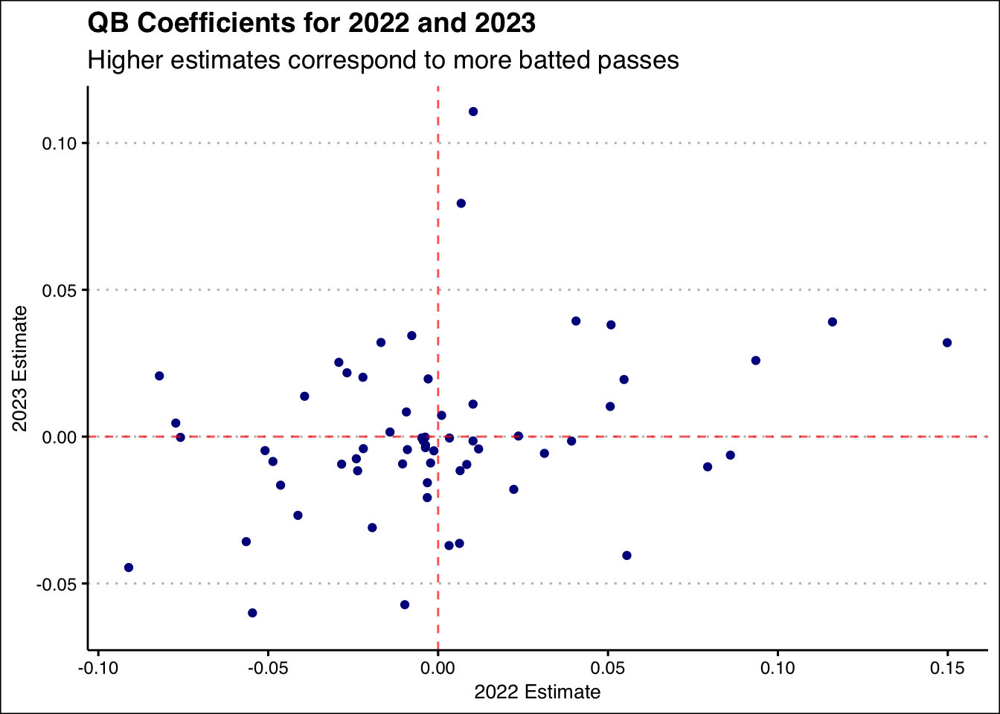

| PlayID | Week | Offense | Defense | Yardline | Quarter | Down | Distance | Playtype | YardsGained | PassLength | PassLocation | AirYards | Quarterback | NumPassRushers | NumOffensiveBackfield | QuarterbackHeight |
|---|---|---|---|---|---|---|---|---|---|---|---|---|---|---|---|---|
| 4041 | 14 | LV | MIN | LV 31 | 4 | 1 | 10 | pass | 29 | short | left | 7 | A.O’Connell | 2 | 1 | 75 |
| 354 | 9 | LV | JAX | LV 26 | 1 | 2 | 13 | pass | 4 | short | left | -4 | D.Carr | 4 | 1 | 75 |
| 3761 | 8 | GB | BUF | BUF 37 | 4 | 3 | 10 | pass | 0 | deep | middle | 17 | A.Rodgers | 4 | 0 | 74 |
| 3520 | 9 | IND | NE | IND 11 | 4 | 1 | 10 | pass | 4 | short | right | -4 | S.Ehlinger | 3 | 1 | 75 |
| 1854 | 2 | CAR | NO | CAR 32 | 2 | 3 | 3 | pass | 0 | short | left | 14 | B.Young | 3 | 1 | 72 |
Batted Passes in the NFL: A Hierarchical Approach to Explaining Variance of an Unlikely Event
Introduction
Batted passes occur when a quarterback throws the ball and a defender hits it down, typically around the line of scrimmage. Batted passes usually result in an incomplete pass and a loss of down which does not advance the ball and hurts the offensive team’s chance of scoring. In this project, we attempted to isolate the factors that go into causing batted passes so that coaches and teams can lower the number of their passes that get batted and increase the number of passes they bat down. Oftentimes shorter quarterback prospects are dismissed due to the notion that they “cannot see over the defense” and that their passes will get batted down more often than taller quarterbacks. As such, another main focus for this project was determining whether quarterback height actually matters in explaining batted passes or if this is simply an example of unfounded bias against short QBs.
Data
Throughout this project, we used data from the nflverse package, specifically player and play by play data. We were also provided data by For The Numbers (FTN) which proved to be an invaluable resource as the nflverse data does not indicate if a pass was batted. The FTN data also contained detailed formation level data from the 2022 and 2023 seasons. By combining the data from both sources, we were able to get a detailed picture of what happened in every play of every game. We decided to focus on the two most recent NFL seasons, 2022 and 2023, for the majority of our analysis. One of our biggest data cleaning steps was making sure each team’s initials were done the same in the FTN and nflverse datasets. Only one team was different, the Los Angeles Rams were shortened to “LA” in one dataset and “LAR” in the other. Also before merging datasets, we created a column in the FTN data to indicate with a 1 that every pass was batted and after merging, assigned each N/A value to be 0, indicating the pass was not batted. We also had to assign what season every game was in as the data currently only included the date of the game. We merged in two separate nflverse datasets, one for the play by play data and one for player data from which we were able to get quarterback heights. After merging all the cleaned datasets, we filtered out all events that were not passes.
Exploratory Data Analysis (EDA)
We began exploring the data by creating visualizations displaying quarterback height and the count and percentage of batted passes they have thrown. From our initial exploration, all of our graphics showed that height does not have a significant impact on if a pass gets batted down.

The next aspect we explored was the location and length of the pass. Short passes are significantly more likely to be batted down than deep passes. Similarly, passes thrown towards the middle of the field are slightly more likely to be batted when compared to passes thrown to the left or right sides of the field.

Another offensive characteristic available to us was the offensive formation type for each play: shotgun, pistol, or under center. There was no clear indication of one formation creating more batted passes than another. We also knew how many offensive players were in the backfield on each play and our graphs showed that more offensive players in the backfield lead to less batted passes.


We then looked at defensive characteristics to see if they contribute to batted passes. With the FTN data, we were able to see how many pass rushers there were in each pass play. Charting these, we saw that more pass rushers correlated with more batted passes.

Through the nflverse data, we were able to see the air yards of each pass. Modeling showed that batted passes strongly align with lower air yard values, which makes sense as low air yards is more of a consequence of a batted pass rather than something that could cause it. Once we got to the modeling process, we cut out air yards from our models as it came out as the most important variable by far for every model.
Methods
Because we have quarterbacks throwing multiple passes, each pass one quarterback throws is not independent from their other passes. That quarterback will have their own randomness they bring to the table based on their individual playing style. The same idea applies to each teams’ defensive lineup, a pass batted by one team is not independent of the same team not batting another pass. To handle this, we used a multilevel logistic model, multilevel to handle the random effects from having the same quarterback throwing multiple passes and the same defense defending against multiple passes, and logistic because our response variable, is the pass batted or not, is indicated by a binary variable.
After deciding on the random effects variables, we began choosing fixed effects variables. We chose to use many of the variables we conducted exploratory data analysis on, including quarterback height, pass location, quarterback starting location, number of pass rushers, and number of players in the offensive backfield.
We plan to use the variance of the random effects (quarterback and defensive team) to determine which has a bigger effect on causing batted passes. The fixed effects coefficients will tell us which variables at the individual pass level increase, decrease, or have no effect on batted passes.
Results
Fixed Effect Estimates

This plot shows the estimates for all the fixed effects in our model, colored by year. Being on the log-odds scale, estimates greater than zero means that the variable corresponds to an increase in batted passes, estimates less than zero means that the variable corresponds to a decrease in batted passes, and estimates equal to zero show no impact on batted passes. Transparent intervals signify that the interval contains zero, or that the variable might not impact batted passes at all. We can see that middle passes and number of pass rushers are significant in both years.
Random Effects Coefficient Estimates

From this plot, we can see that the Chiefs defense stands out as an outlier in batting down passes in both years. Whether it is by scheme or personnel, Steve Spagnuolo’s unit consistently exceeds in knocking down balls and have had great success in winning back-to-back Super Bowls.

Both the defensive team and quarterback scatterplots show a moderate positive relationship between estimates in 2022 and estimates in 2023. With correlation values of around 0.3, we see that batted passes at the individual level are relatively consistent from year to year. Teams and quarterbacks can certainly improve or falter in terms of batting passes down (or getting less passes batted) but overall, they tend to not change too dramatically over the course of one offseason.
Best and Worst Quarterbacks
| Highest and Lowest QB Estimates in 2022 | |||
|---|---|---|---|
| Higher estimates correspond to more batted passes | |||
| Quarterback | season | Estimate | |
| J.Fields |  |
2022 | 0.14983385 |
| B.Mayfield |  |
2022 | 0.11607093 |
| J.Herbert |  |
2022 | 0.09350120 |
| C.Rush |  |
2022 | 0.08603160 |
| J.Burrow |  |
2022 | 0.07932385 |
| T.Tagovailoa |  |
2022 | -0.05647621 |
| A.Rodgers |  |
2022 | -0.07582443 |
| M.Jones |  |
2022 | -0.07721545 |
| G.Smith |  |
2022 | -0.08204432 |
| P.Mahomes |  |
2022 | -0.09106678 |
| Highest and Lowest QB Estimates in 2023 | |||
|---|---|---|---|
| Higher estimates correspond to more batted passes | |||
| Quarterback | season | Estimate | |
| S.Howell |  |
2023 | 0.11070759 |
| G.Minshew |  |
2023 | 0.07944594 |
| K.Murray |  |
2023 | 0.03937532 |
| B.Mayfield | |
2023 | 0.03906751 |
| T.Lawrence |  |
2023 | 0.03806748 |
| B.Zappe |  |
2023 | -0.04047504 |
| P.Mahomes | |
2023 | -0.04458232 |
| J.Love |  |
2023 | -0.05723916 |
| K.Cousins |  |
2023 | -0.06003947 |
| B.Young |  |
2023 | -0.06399508 |
These tables provide an overview of the best and worst quarterbacks in the NFL when it comes to batted passes. Patrick Mahomes, one of the NFL’s best quarterbacks, is the only one to maintain his spot in the top five in both seasons.
One interesting case study we examined was the case of Bryce Young of the Carolina Panthers. A former number one overall pick in the draft at just 5 foot 10, questions were raised both in the pre-draft process and post-draft about his height. Young had an up-and-down rookie year as the Panthers finished just 3-13, so one is inclined to believe his height correlated with his struggles. Perhaps so, however, in the table above we see that Young’s random effect in relation to batted passes was actually the best in the NFL this past season! So does this dispel the notion that shorter quarterbacks have more batted passes? Well… not quite…
Young’s random effect coefficient is the best in the league, however, this is without accounting for the fixed effects, which include QB height. Once the model penalty for height is accounted for, he no longer ranks in the top five. On the bright side, he still does not reach the bottom five (or anywhere close), signifying that there is something about his game that allows him to “outperform” his small stature and avoid batted passes. The same cannot be said about a fellow vertically-challenged quarterback, Kyler Murray, who stands at the same 5 foot 10 yet whose random effect ranks bottom three in the NFL this past season for batted passes. Once incorporating the height coefficient from the fixed effects, Murray ranks dead last. Maybe size does matter after all…
Discussion
Our goal for this project was to determine what factors have the biggest impacts on if a pass is batted or not. The low variance of the quarterback throwing the ball shows that quarterbacks have much less impact on batted passes when compared to the defensive team they are against. Some defensive team created many more batted passes than others which the high variance our model found supports. We also found that play dependent factors such as number of pass rushers or number of players in the offensive backfield had nonzero estimates, meaning they do affect the chances of a batted pass. More pass rushers slightly increases the chances of a batted pass. Having more players in the offensive backfield decreases the chance of a batted pass and had more impact than the number of pass rushers. Passing towards the middle significantly increases the probability of the pass being batted.
Although our initial data exploration showed that height did not impact batted passes, our 2023 season model showed that height has a log odds ratio below 0, which implies that the taller a quarterback is, the less likely they are to throw batted passes. Our 2022 model has a log odds ratio of less than 0 but the confidence interval includes 0 so we cannot conclude anything from that model.
Limitations
A large part of our model included variables that came from the FTN charting data such as numbers of pass rushers and offensive backfielders for each play. Because this data is only available for the 2022 and 2023 seasons, we were only able to create models for those two years. This limits our ability to inspect long term trends and draw conclusions on anything more than a year to year basis. We also had limited tracking data available to us and limited time so we decided not to include tracking at this moment.
Next Steps
Next steps for this project include bringing in the publicly available tracking data from the NFL Big Data Bowl and StatsBomb. We would also add data from the load participation package from nflverse which would give us a list of players on the field for each play. This would allow us to look deeper into what impact individual defensive players have.
Acknowledgements
We would like to thank Dr. Ron Yurko for all of his guidance and mentorship in completing this project. We would also like to thank Quang Nguyen for all of his instruction and support throughout the summer research experience. A special shout out goes out to For The Numbers (FTN) for so graciously providing the batted passes data. Finally, a huge thanks goes out to everyone involved in the Carnegie Mellon Sports Analytics Camp in any capacity for allowing us such a fantastic opportunity.